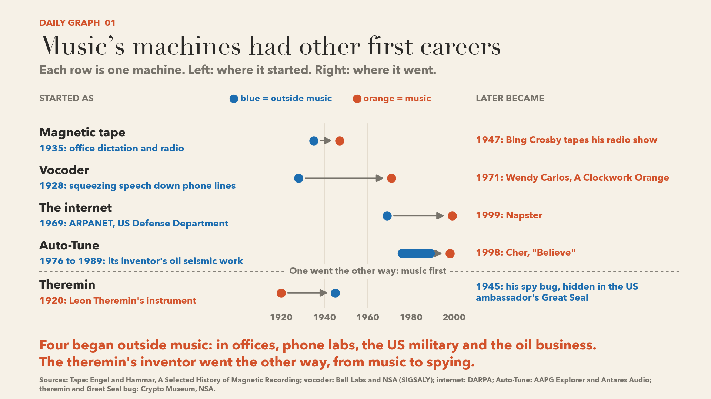
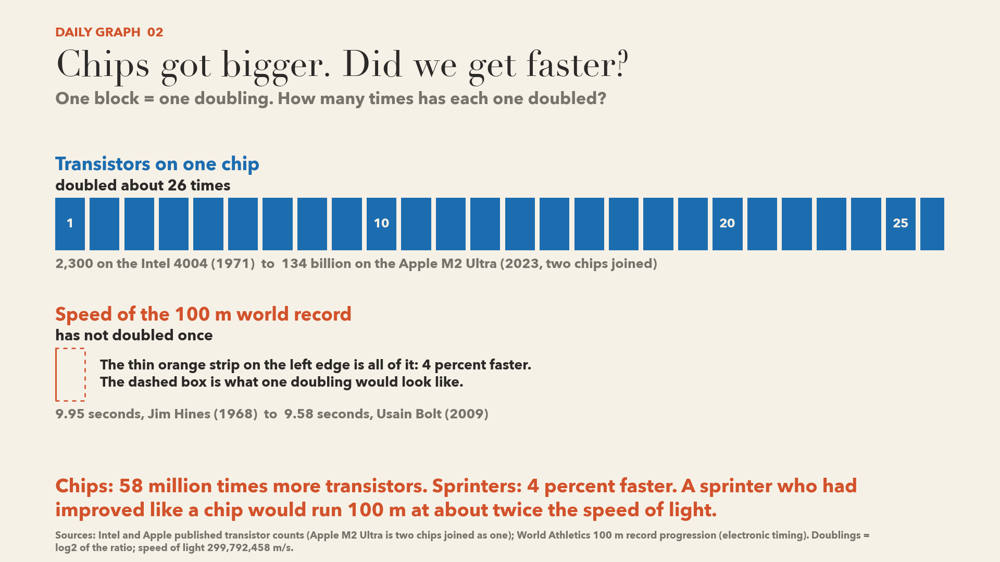
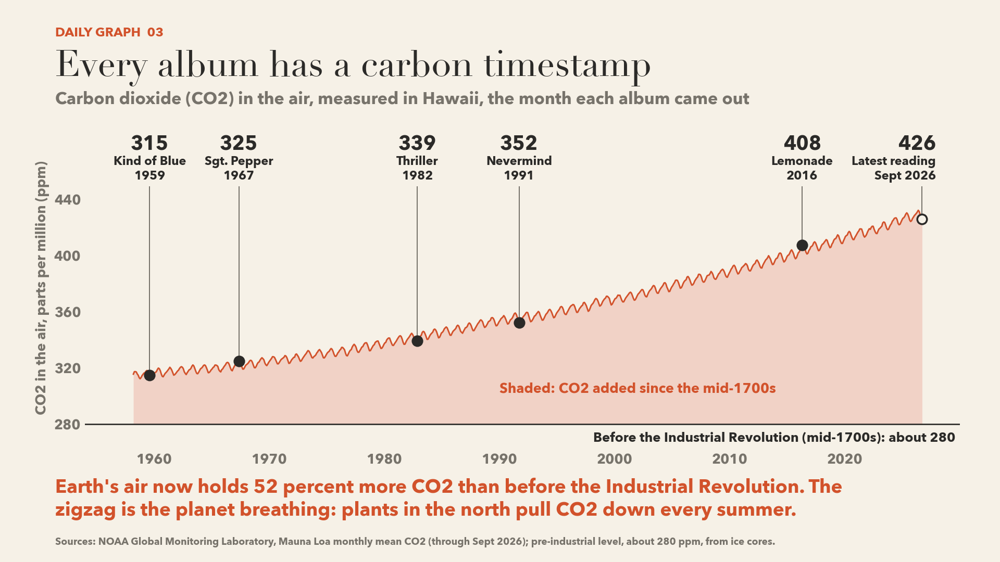
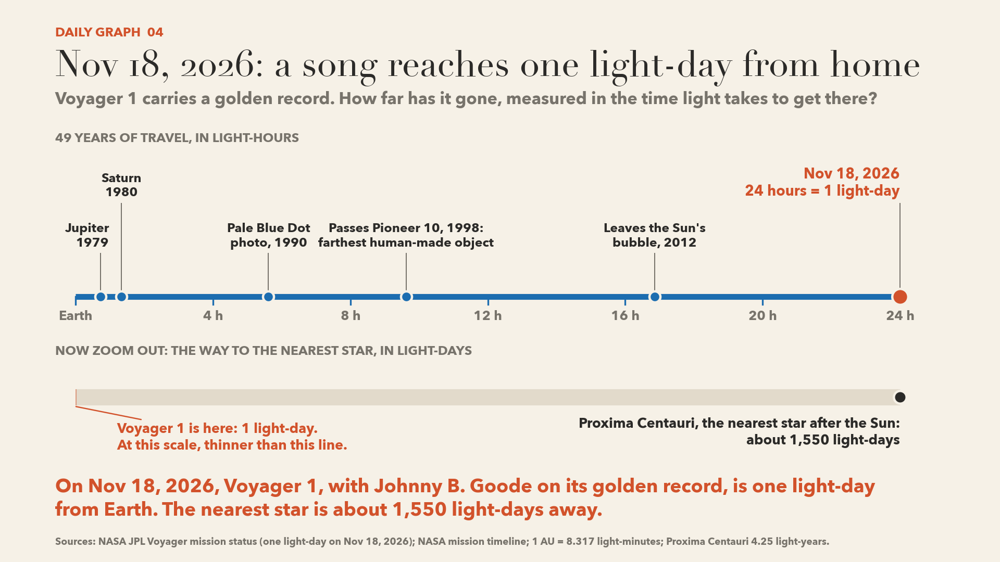
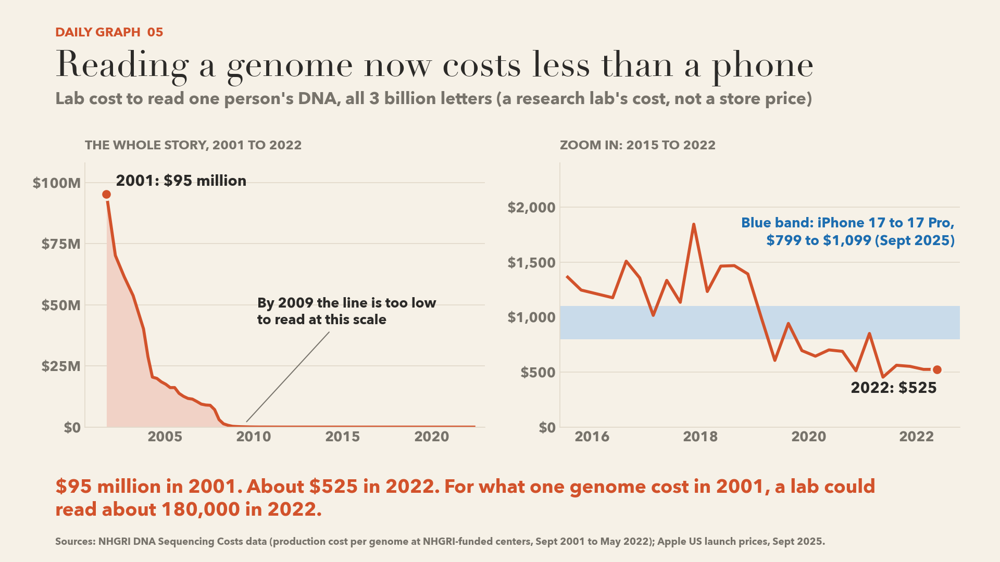
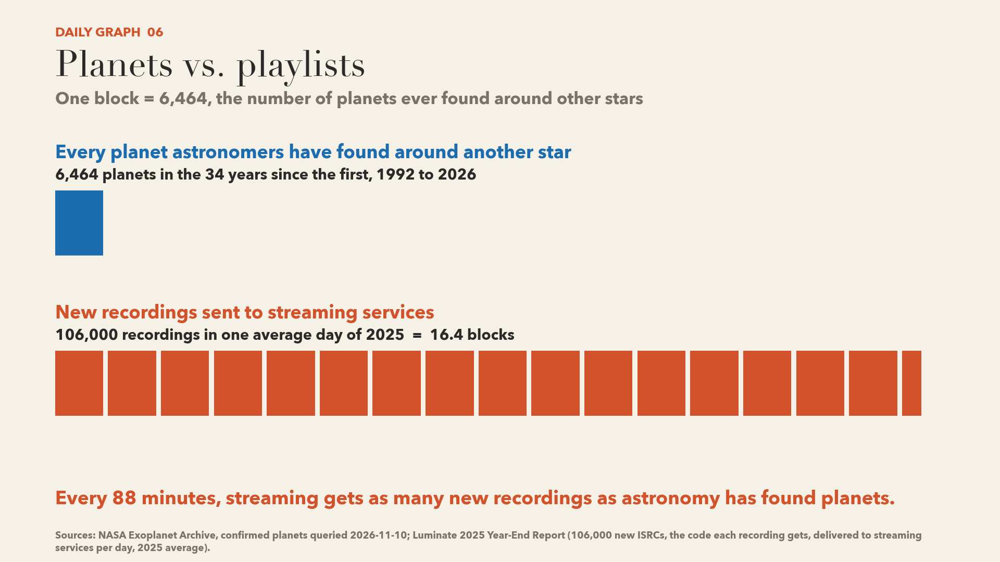
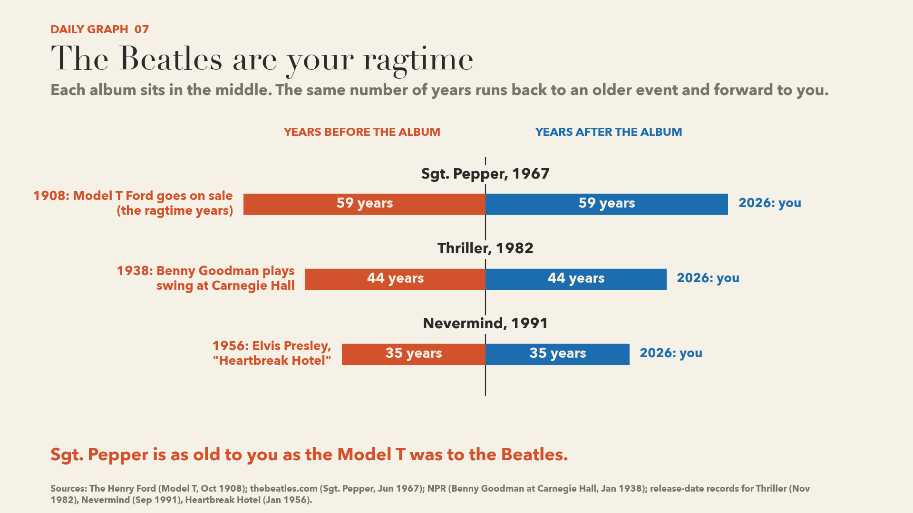
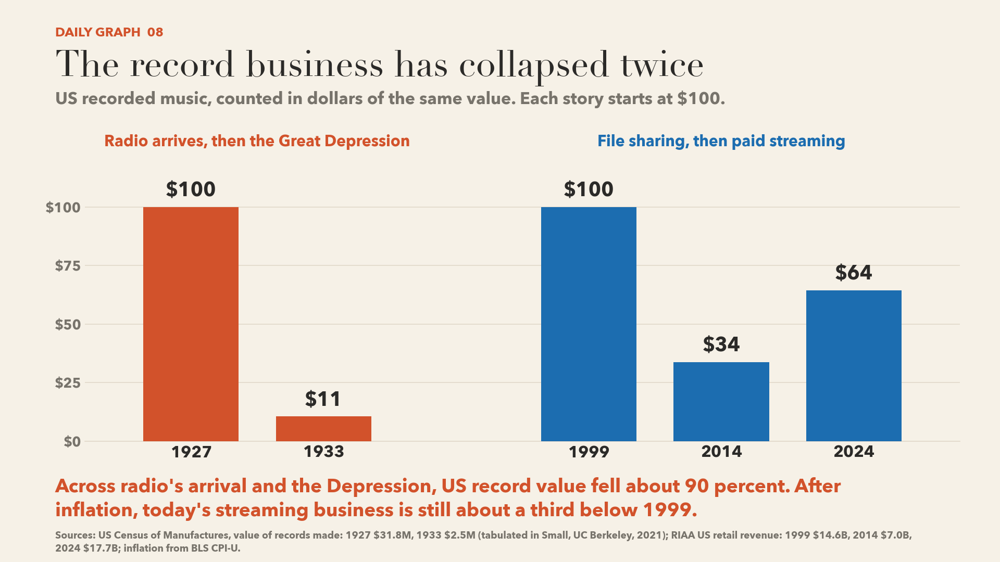
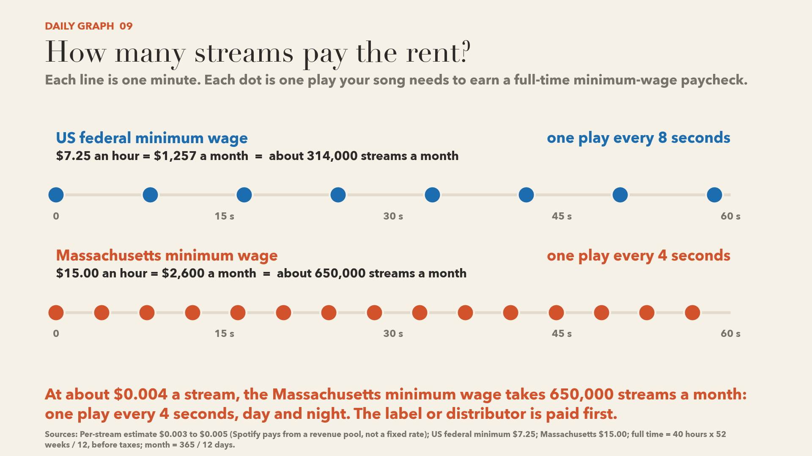
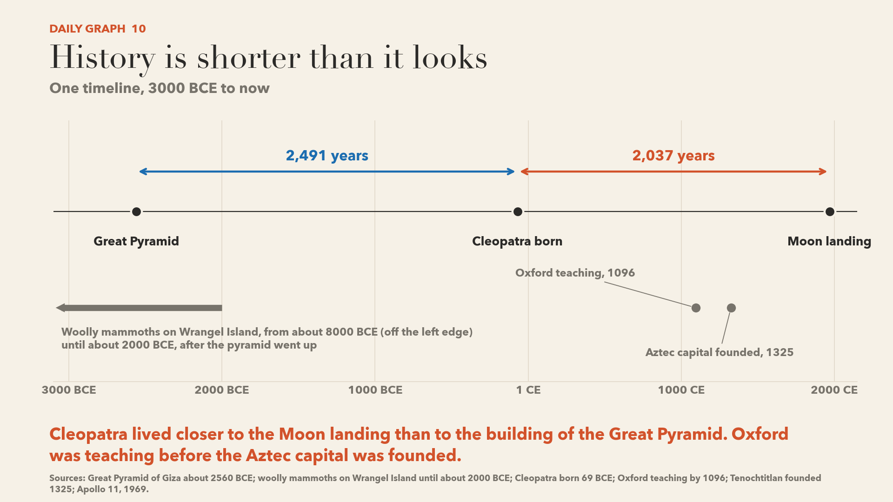

Daily Graphs
One graph for each class. Each graph puts two things side by side and asks a question. Click a graph to enlarge it. Open a tile for the story behind it, then follow the links.

Music’s machines had other first careers
What am I looking at?
Four of these five music tools began in other jobs: offices, phone labs, the military and the oil business. AEG showed the Magnetophon tape recorder in Berlin in 1935 and sold it for office dictation and radio work. Homer Dudley started the vocoder at Bell Labs in 1928 to fit more speech down a phone line. ARPANET, the network that grew into the internet, was paid for by the US Defense Department in 1969.
Auto-Tune is a special case. The software came out in 1997, and it was made for music. Its inventor, Andy Hildebrand, had spent 1976 to 1989 studying echoes from underground rock for oil companies, and he used the same math again. The theremin row runs the other way. Leon Theremin built his instrument in 1920 and later a hidden listening device for Soviet intelligence.
Each orange dot marks a famous music moment, not the first musical use. Tape recorded an orchestra in 1936. The move from one field to another is called technology transfer.
Words on this graph
- Vocoder
- A device that splits a voice into frequency bands and rebuilds it. In music, it lets a synthesizer 'sing' the words a person speaks.
- Office dictation
- Speaking a letter into a recorder so a typist can play it back and type it later.
- ARPANET
- A computer network paid for by ARPA, a US Defense Department research agency. It sent its first message in 1969 and grew into the internet.
- Seismic work
- Sending sound waves into the ground and studying the echoes to map rock layers. Oil companies use it to decide where to drill. The same math can find the pitch of a voice.
- Theremin
- An electronic instrument played without touch. Your hands move near two antennas to change pitch and volume.
- Great Seal
- The national emblem of the United States, an eagle holding arrows and an olive branch. A carved wooden copy given to the US ambassador in Moscow had a listening device inside.
- Technology transfer
- When a tool made for one field is adopted by another, such as military research reaching music studios.
Want to know more?
- A Selected History of Magnetic RecordingscholarlyFriedrich Engel and Peter Hammar, ed. Richard L. Hess. How tape began in Berlin in 1935, the 1936 orchestra recording, and how it reached Bing Crosby.
- Cryptography and Cyborg Speech: The Strange Journey of the VocoderjournalismRed Bull Music Academy Daily. From 1928 telephone research and a secret wartime phone link to pop records.
- VocodersprimaryWendy Carlos (wendycarlos.com). The composer of A Clockwork Orange explains the vocoder and how she used it.
- ARPANETprimaryDARPA. The Defense Department agency's own account of the 1969 network.
- From Rocks to Rock, His Ideas Sound GoodjournalismAAPG Explorer. A geology magazine profiles the oil scientist who built Auto-Tune.
- The Great Seal Bug (The Thing)museumCrypto Museum. How the theremin's inventor built a listening device with no battery.

Chips got bigger. Did we get faster?
What am I looking at?
Transistor counts on a chip doubled about 26 times between 1971 and 2023, and the 100 m record speed has not doubled once. Each block on the graph stands for one doubling: two times, then four, then eight. After 26 doublings the count is 58 million times larger, because each doubling multiplies the whole total.
Engineers did this by shrinking the transistor, a tiny switch, so that more of them fit on the same piece of silicon. A sprinter has no part to shrink. Researchers who studied 3,263 world records found that most events are now close to a human limit.
The two rows also measure different things. The top row counts parts on a chip. The bottom row measures average speed over 100 metres, which rose from 10.05 metres per second in 1968 to 10.44 in 2009. No runner could improve like a chip, since nothing travels faster than light. The last line of the graph is a way to feel the size of 26 doublings.
Words on this graph
- Doubling
- Multiplying by two. Ten doublings is about 1,000 times, twenty is about a million, and 26 is about 58 million.
- Transistor
- A tiny electronic switch that is either on or off. A computer chip is billions of them working together.
- log2
- The small print uses this to count doublings. The log2 of a number is how many times you double 1 to reach it: log2 of 8 is 3.
- Two chips joined
- Apple builds the M2 Ultra by connecting two M2 Max pieces of silicon in one package. A single piece has half the transistors, which is one doubling fewer.
- Electronic timing
- Timing started by the gun and stopped by a camera at the finish, to one hundredth of a second. World records have required it since 1977, and the first such record is the 9.95 from 1968.
- Average speed and top speed
- 100 metres in 9.58 seconds is an average of 10.44 metres per second. A sprinter starts from zero, so the peak inside the race is higher: 12.32 metres per second for the 2009 record.
- Speed of light
- 299,792,458 metres per second. In physics nothing with mass can reach it, so the last line of the graph describes something that cannot happen.
Want to know more?
- 1965: Moore's Law Predicts the Future of Integrated CircuitsmuseumComputer History Museum. What Gordon Moore predicted in 1965 and why he slowed the pace to a doubling every two years in 1975.
- What is Moore's Law?explainerOur World in Data. Charts of transistor counts since 1970 and other things in computing that have kept doubling.
- Chip Hall of Fame: Intel 4004 MicroprocessorjournalismIEEE Spectrum. The story of the first block on the graph: 2,300 transistors, built for a Japanese calculator company.
- Hines, first man to break 10 seconds for 100m, diesprimaryWorld Athletics. The 1968 race that starts the orange row, and why its record lasted 15 years.
- The Citius End: World Records Progression Announces the Completion of a Brief Ultra-Physiological QuestscholarlyPLoS ONE (Berthelot et al., 2008). A study of 3,263 world records that finds most sports are near a human limit.
- Multicomponent Velocity Measurement for Linear Sprinting: Usain Bolt's 100 m World-Record AnalysisscholarlyBioengineering (Stuhec et al., 2023). Laser measurements of the 9.58 race, showing the peak of 12.32 metres per second near the halfway point.

Every album has a carbon timestamp
What am I looking at?
Each dot shows how much carbon dioxide was in the outdoor air in the month an album came out. Scientists have measured that air every month since March 1958 at Mauna Loa, a volcano in Hawaii. The unit is ppm, or parts per million: 426 ppm means 426 molecules of carbon dioxide in every million molecules of air.
The dark line under the graph marks 280 ppm. Air bubbles trapped in old ice show that this was the level before the Industrial Revolution began in the mid-1700s. The shaded area is everything above 280, so it shows the carbon dioxide added since the mid-1700s. The hollow ring is not an album. It is the latest reading, 426 ppm in September 2026, which is 52 percent higher than 280.
The curve rises and falls every year. Northern plants take in carbon dioxide as they grow in summer, so the level drops until about October and climbs again until May. Find the album nearest your birth year and read the ppm value that this graph calls its carbon timestamp.
Words on this graph
- ppm (parts per million)
- A way to count very small amounts. 426 ppm means 426 molecules of carbon dioxide in every million molecules of air.
- Keeling Curve
- The name of this Mauna Loa CO2 record. Charles David Keeling of the Scripps Institution of Oceanography started it in 1958, and NOAA has run its own measurements there since 1974.
- Pre-industrial level
- The amount of CO2 in the air before the Industrial Revolution began in the mid-1700s, about 280 ppm. Scientists measure it from air bubbles trapped in old ice.
- Ice core
- A long cylinder of ice drilled out of an ice sheet. Tiny bubbles in it hold samples of air from the year the snow fell.
- Seasonal cycle
- The yearly zigzag in the curve. Northern plants take in CO2 as they grow in summer, so the level falls until about October, then rises again until May.
- Monthly mean
- The average of all the readings in one month. Each point on the curve is one month.
Want to know more?
- Trends in Atmospheric Carbon Dioxide: Mauna LoaprimaryNOAA Global Monitoring Laboratory. The live graph and the latest monthly number, updated every month.
- Mauna Loa monthly mean CO2 data (text file)primaryNOAA Global Monitoring Laboratory. Every month since March 1958, so you can look up the number for any album you like.
- The Keeling CurvescholarlyScripps Institution of Oceanography, UC San Diego. The record that started in 1958, with the newest daily reading.
- Climate Change: Atmospheric Carbon DioxideexplainerNOAA Climate.gov. Where the 280 ppm pre-industrial number comes from and why the level keeps rising.
- Aqua/AIRS Carbon Dioxide with Mauna Loa Carbon Dioxide (2014 update)explainerNASA Scientific Visualization Studio. An animation of the yearly zigzag and why the Northern Hemisphere drives it.

Nov 18, 2026: a song reaches one light-day from home
What am I looking at?
A light-day is the distance light travels in 24 hours, about 25.9 billion kilometers, and NASA calculates that Voyager 1 will be that far from Earth on November 18, 2026. The top ruler counts the trip in light-hours. Voyager 1 launched in September 1977 and passed Jupiter in 1979 and Saturn in 1980. In 1990 it turned its camera back and took the Pale Blue Dot photo of Earth. In 2012 it crossed the heliopause, the edge of the bubble of charged gas around the Sun.
The spacecraft carries a golden record with 27 pieces of music, including Chuck Berry's "Johnny B. Goode." A radio command from Earth will need a full day to reach it, and the reply will need another day to come back.
The bottom ruler runs to Proxima Centauri, the nearest star after the Sun, about 1,550 light-days away. Voyager 1 covered one light-day in 49 years. Multiply 49 by 1,550 to estimate the full trip at that pace. The whole top ruler, end to end, is one light-day.
Words on this graph
- light-day
- The distance light travels in one day: about 25.9 billion kilometers. A light-hour is one twenty-fourth of that. These units measure distance, not time.
- astronomical unit (AU)
- The average distance from Earth to the Sun, about 150 million kilometers. Light needs about 8.3 minutes to cross it.
- the Sun's bubble (heliosphere)
- The region filled by charged gas flowing out from the Sun. Its edge is called the heliopause. Past it, a spacecraft is in interstellar space, the space between the stars.
- golden record
- A gold-plated copper record on each Voyager spacecraft, with greetings, sounds and 27 pieces of music from around the world.
- Pale Blue Dot
- A 1990 photo of Earth taken by Voyager 1 from about 6 billion kilometers away, where Earth is a single bright speck.
- Pioneer 10
- A NASA spacecraft launched in 1972, the first to fly past Jupiter. It was the farthest human-made object until Voyager 1, which travels faster, passed it in 1998.
- Proxima Centauri
- The nearest star to the Sun, about 4.25 light-years away. It is a small red star too dim to see without a telescope.
Want to know more?
- Where are Voyager 1 and Voyager 2 now?primaryNASA. NASA's countdown and the exact moment of the one light-day milestone.
- Voyager 1primaryNASA. The full mission timeline: launch, Jupiter, Saturn, passing Pioneer 10, interstellar space.
- Golden Record Sounds and MusicprimaryNASA. Every track on the record, from Bach to Chuck Berry, with running times.
- Voyager 1's Pale Blue DotprimaryNASA. The 1990 photo of Earth and the story behind it.
- Questions and Answers with Dr. Ed StoneprimaryNASA. How scientists decided Voyager 1 had left the Sun's bubble, and why the exact day is uncertain.
- Voyager 1 is nearly one light-day from Earth. What's out there?journalismScience News. What the spacecraft is still measuring, and what lies ahead of it.

Reading a genome now costs less than a phone
What am I looking at?
Reading one human genome cost a research lab about $95 million in 2001 and about $525 in 2022. The numbers come from the National Human Genome Research Institute. They track what its funded labs spend to produce the raw data: chemicals, staff, machines and power. They are a lab's cost, not a price a person pays, and they leave out checking and interpreting the data.
The left panel shows the whole fall in millions of dollars. Around 2008, labs moved to machines that read millions of DNA pieces at once. After that the line sits so close to zero that you cannot read it. The right panel zooms in on the last seven years, and its scale runs in single dollars.
The blue band marks 2025 iPhone launch prices. Find the year the red line first drops below the band. Then divide the 2001 cost by the 2022 cost. The answer, about 180,000, measures how far the cost fell after next-generation sequencing.
Words on this graph
- Genome
- All the DNA in one living thing. A human genome is about 3 billion letters long, written with only four letters: A, C, G and T.
- Sequencing
- Reading the order of the letters in a piece of DNA with a machine.
- Production cost
- What it costs a lab to make something: materials, staff, machines and power. A price is what a buyer pays, and it can be higher or lower.
- Next-generation sequencing
- Machines, in wide use from about 2008, that read millions of short DNA pieces at the same time instead of a few at a time.
- Zoom panel
- A second chart that shows a small part of the first one on a bigger scale. Here the left axis counts in millions of dollars and the right axis counts in single dollars.
- NHGRI
- The National Human Genome Research Institute, the United States government institute that led the Human Genome Project and still funds large sequencing labs.
Want to know more?
- DNA Sequencing Costs: DataprimaryNational Human Genome Research Institute. The dataset behind the red line, with what the costs include and leave out.
- The Cost of Sequencing a Human GenomeprimaryNational Human Genome Research Institute. Explains why cost and price differ and what the first human genome really cost.
- Human Genome Project Fact SheetprimaryNational Human Genome Research Institute. The 1990 to 2003 project that read the first human genome.
- DNA sequencing at 40: past, present and future (Nature, 2017)scholarlyShendure et al., Nature 550, doi:10.1038/nature24286 (NHGRI copy, PDF). A history of sequencing machines, including the move to massively parallel sequencing.
- Illumina ushers in $200 genome with launch of new sequencersjournalismMedTech Dive. What happened after the data end in 2022, and the conditions behind a $200 claim.
- $1,000 genomeoverviewWikipedia. An overview of the long race to a thousand-dollar genome.

Planets vs. playlists
What am I looking at?
Streaming services receive more new recordings in 88 minutes than astronomers have confirmed planets in 34 years. NASA's Exoplanet Archive lists 6,464 confirmed planets around other stars. The first two were confirmed in 1992, around a pulsar. Astronomers had been searching for years before that with no confirmed result.
On the music side, the data company Luminate counted 106,000 recordings delivered to streaming services on an average day in 2025. Each recording carries its own code. A remix, a radio edit or a live take of one song gets a separate code, and some uploads are made with AI tools. So the orange blocks count recordings, not new songs.
Check the 88 minutes yourself. Divide 6,464 by 106,000, then multiply by the 1,440 minutes in a day. Then look up the code on one of your own tracks. That code is the ISRC.
Words on this graph
- Exoplanet
- A planet that orbits a star other than our Sun. The graph counts confirmed planets, which means astronomers have ruled out other explanations for the signal.
- Pulsar
- The small, spinning core left after a large star explodes. It sends out radio pulses as regular as a clock. Tiny changes in that timing revealed the first two planets in 1992.
- ISRC
- International Standard Recording Code: a 12-character code that identifies one sound recording. A remix or a new edit of the same song gets its own code, so ISRCs count recordings, not songs.
- Streaming service
- A company that plays music over the internet, which industry reports call a DSP (digital service provider). Spotify, Apple Music and YouTube are streaming services.
- Average day
- Luminate's figure for 2025 is a daily average across the year, so single days run higher or lower.
- Unit block
- Each square on the graph stands for the same amount, here 6,464. Count the squares to compare the two rows.
Want to know more?
- NASA Exoplanet ArchiveprimaryNASA / Caltech IPAC. The live count of confirmed planets and the table of discoveries by year behind the blue block.
- 2025 Year-End Music ReportprimaryLuminate. Source of the 106,000-a-day figure, plus how few of those recordings ever reach 1,000 streams. A large PDF (about 80 MB).
- International Standard Recording Code (ISRC)primaryIFPI. What the code is, who assigns it, and why it identifies recordings and not songs.
- Who Really Discovered the First Exoplanet?journalismScientific American. An astronomer on the searches of the 1980s and why 'first planet' has more than one answer.
- How to find an exoplanetexplainerEuropean Space Agency. The methods behind the 6,464: star wobbles, dips in starlight, direct images and pulsar timing.
- Music streaming platforms now host quarter of a BILLION tracks. Where does it end?journalismMusic Business Worldwide. What the daily flood means for artists: 253 million tracks in total, and Deezer's report that about a third of its daily uploads are fully AI-made.

The Beatles are your ragtime
What am I looking at?
Sgt. Pepper came out in 1967, 59 years before 2026, and in 1967 the Model T Ford was already 59 years old. Each row of the graph puts one famous album on the center line. The blue bar runs forward from the album to you. The orange bar runs the same number of years back to an older event.
In 1967, the Model T and ragtime piano came from the time of the Beatles' grandparents. Thriller came out in 1982, 44 years after Benny Goodman played swing at Carnegie Hall, and Thriller is now 44 years behind you. Nevermind came out in 1991, 35 years after Elvis Presley released "Heartbreak Hotel."
The graph counts whole calendar years, so a gap can be a few months longer or shorter than the number on the bar. Try it yourself. Pick an album from the year you were born, count back the same number of years, and find what people were playing then. Both bars in each row measure the same time span.
Words on this graph
- Ragtime
- American piano music with a steady left-hand beat and an offbeat, syncopated melody. Its best-known composer is Scott Joplin, and it was most popular from about 1897 to 1917.
- Swing
- Big-band jazz for dancing and listening, played by bandleaders such as Benny Goodman. It was most popular in the late 1930s and early 1940s.
- Model T Ford
- A low-priced car that Ford began selling in October 1908. It put many ordinary American families on the road, and it stands here for daily life in that era.
- Carnegie Hall
- A concert hall in New York known for classical music. Benny Goodman's 1938 concert there is remembered as the night jazz was accepted on the concert stage.
- Sgt. Pepper
- Short for Sgt. Pepper's Lonely Hearts Club Band, the album the Beatles released in June 1967.
Want to know more?
- Ford's Model T: A Car for the Great MultitudemuseumThe Henry Ford. The museum's history of the car, with the October 1, 1908 launch date.
- Sgt. Pepper's Lonely Hearts Club BandprimaryThe Beatles (official site). The band's own album page and release date.
- How Benny Goodman Orchestrated The Most Important Concert In Jazz HistoryjournalismNPR (via KUNC). Why the 1938 Carnegie Hall concert mattered for jazz.
- Benny Goodman brings jazz to Carnegie HalljournalismHistory.com. A short account of the concert night, January 16, 1938.
- RagtimeexplainerBallad of America. What ragtime is and when it was popular.

The record business has collapsed twice
What am I looking at?
The US record business lost most of its value twice, first around 1930 and again after 1999. Each group of bars starts at $100, so the other bars show how much of every $100 was left. Every figure has had an inflation adjustment, which means each one is divided by the price level for its year.
Census counts put the value of records made at $31.8 million in 1927 and $2.5 million in 1933. Prices also fell in those years, so the real drop is about 90 percent. Radio spread into homes in the same years as the Great Depression, and historians still argue about which one hurt more.
The second fall began in 1999, when Napster let people share song files without paying. Revenue fell from $14.6 billion in 1999 to $7.0 billion in 2014, and paid streaming lifted it to $17.7 billion in 2024. A 2024 dollar buys about half of what a 1999 dollar bought. So 2024 comes to $64 for every $100 in 1999 after the inflation adjustment.
Words on this graph
- Starts at $100
- A way to compare two businesses of different sizes. The first year in each group is set to $100, and each later bar shows how much of that $100 was left. $64 means 64 percent of the starting value.
- Dollars of the same value
- Dollars adjusted for inflation, also called real dollars. A dollar in 1999 bought more than a dollar in 2024, so each figure is divided by the price level for its year before the years are compared.
- Consumer Price Index (CPI-U)
- A US government measure of the average price of things city households buy, published by the Bureau of Labor Statistics since 1913. It is the price level used for the inflation adjustment here.
- Census of Manufactures
- A US government count of what factories produced, taken every two years in the 1920s and 1930s. It gives the value of records made, not records sold in shops.
- Retail revenue
- The RIAA's estimate of what listeners paid in total for recorded music in a year, including streaming subscriptions, vinyl and downloads. The RIAA is the trade group of the US record labels.
- File sharing
- Copying song files from one person's computer to another over the internet without paying. Napster made it common in 1999.
Want to know more?
- Audible Struggle: Phonographs, Records, and Musical Manufactures in the United States, 1899-1939scholarlyShadrick Small, UC Berkeley (Social Science History Association 2021 paper). The Census table behind the orange bars, and an argument that the radio story is overstated.
- 2024 Year-End Revenue ReportprimaryRIAA. The official US numbers for streaming, vinyl and total revenue in 2024.
- CPI Inflation CalculatorprimaryUS Bureau of Labor Statistics. Type in any dollar amount and two years to do the inflation adjustment yourself.
- With $15bn in revenue, 2021 was the US record industry's biggest ever year (kind of)journalismMusic Business Worldwide. Why a record year in dollars is still below 1999 after inflation.
- Record Cultures, IntroductionscholarlyKyle Barnett, University of Michigan Press. How the record, radio and film industries merged in the 1920s and 1930s.
- The Industrialization of Popular MusicscholarlySimon Frith (course reading, DePaul University). A classic essay on how technology and money shaped popular music, including the 1930s slump.

How many streams pay the rent?
What am I looking at?
A song needs one play every four seconds, all month, to match a full-time minimum-wage job in Massachusetts. The state minimum is $15.00 an hour, and 40 hours a week for 52 weeks comes to $2,600 a month before taxes. At $0.004 a stream, that is 650,000 streams. A month has 2,628,000 seconds, so the plays land four seconds apart. The federal minimum of $7.25 needs 314,000 streams, one every eight seconds.
Spotify does not pay a fixed price per play. Each month it puts part of its income from subscriptions and ads into a pool and splits the pool by share of streams. The $0.004 figure is an outside estimate of the average, and it probably runs from $0.003 to $0.005.
The money goes first to the label or distributor that delivered the track. The artist is paid from there under a contract. A track also earns nothing until it reaches 1,000 streams in a year. What a song earns depends on its stream share.
Words on this graph
- Minimum wage
- The lowest hourly pay an employer may legally offer. The federal floor is $7.25. A state can set a higher one, and Massachusetts sets $15.00.
- Full time
- Here, 40 hours a week for all 52 weeks of the year, divided by 12 to get one month's pay.
- Before taxes (gross pay)
- Money earned before taxes and other deductions come out. The graph compares gross wages with gross streaming income.
- Per-stream estimate
- An average worked out by outside observers: money paid out divided by streams counted. Spotify publishes no such rate, so the figure is a range, $0.003 to $0.005.
- Stream share
- Your part of all the streams on a service in one country in one month. Spotify splits its royalty pool by this share, so a single stream has no fixed price.
- Distributor
- A service that delivers an independent artist's tracks to Spotify and other platforms and passes the royalties back, sometimes for a fee or a percentage.
Want to know more?
- Understanding Spotify royaltiesprimarySpotify for Artists. Spotify's own account of the royalty pool and stream share, and why there is no per-stream rate.
- Track monetization eligibilityprimarySpotify for Artists. The rule that a track needs at least 1,000 streams in 12 months before it earns recorded royalties.
- Loud & ClearprimarySpotify. Spotify's yearly royalty report: total payouts and how many artists reach each level of income.
- Calculating Spotify's per-stream payout: harder than you might guessjournalismHypebot. Where the $0.003 to $0.005 estimate comes from, and why country, plan type and deal change it.
- Minimum WageprimaryUS Department of Labor, Wage and Hour Division. The federal minimum of $7.25 an hour and the date it took effect.
- State Minimum Wage LawsprimaryUS Department of Labor, Wage and Hour Division. Compare Massachusetts with every other state's minimum wage, then redo the graph's math for your home state.

History is shorter than it looks
What am I looking at?
Cleopatra was born closer in time to the Moon landing than to the building of the Great Pyramid. The pyramid at Giza was built for the king Khufu around 2560 BCE. Cleopatra VII was born in 69 BCE, 2,491 years later. Apollo 11 landed on the Moon in 1969, 2,037 years after her birth. There is no year zero, so to count across the line between BCE and CE, you add the two numbers and subtract one.
Ancient Egypt lasted so long that people in Cleopatra's time already saw the pyramids as old. The last woolly mammoths lived on Wrangel Island, off northern Siberia, and died out after the pyramid was built. The University of Oxford says teaching took place there by 1096, and a named teacher, Theobald of Etampes, appears in the records of the early 1100s. Both dates come before the Mexica founded Tenochtitlan in 1325.
Pick two dates from the chart, find the gap, and place a third event between them. This skill of putting events in order and measuring the gaps is called chronology.
Words on this graph
- BCE and CE
- Before Common Era and Common Era. They count years the same way as the older BC and AD. BCE years count down toward the start of CE, so 2560 BCE is earlier than 69 BCE.
- No year zero
- The calendar jumps from 1 BCE straight to 1 CE. To find the gap between a BCE year and a CE year, add the two numbers and subtract one.
- Wrangel Island
- An island in the Arctic Ocean, north of Siberia. Rising seas cut it off about 10,000 years ago, and the last known woolly mammoths lived there.
- Tenochtitlan and the Mexica
- The Mexica, often called the Aztecs, built Tenochtitlan on an island in Lake Texcoco. Mexico City stands on the same site today.
- Teaching at Oxford in 1096
- Oxford has no single founding date. 1096 is the date the university gives for the first teaching there. The first teacher known by name, Theobald of Etampes, lectured there about 1117.
- Radiocarbon dating
- A way to date bones and other once-living material by measuring how much carbon-14 is left. It is how scientists know when the last mammoths lived.
Want to know more?
- Old Kingdom monuments: the Pyramids of GizamuseumRosicrucian Egyptian Museum. A museum's short guide to when and why the Giza pyramids were built.
- The last woolly mammoths offer new clues to why the species went extinctjournalismScience News. Reports the 2024 genome study of the Wrangel Island mammoths and their extinction about 4,000 years ago.
- Cleopatra VII (person record)museumMuseum of New Zealand Te Papa Tongarewa. Museum record with Cleopatra's birth and death dates and objects linked to her.
- Zona Arqueologica Templo MayorprimaryINAH, Instituto Nacional de Antropologia e Historia. Mexico's national archaeology institute on the founding of Tenochtitlan in 1325 and its great temple.
- Apollo 11primaryNASA. NASA's mission page for the first crewed Moon landing, July 20, 1969.
- The University of Oxford (A History of the County of Oxford, vol. 3)scholarlyVictoria County History, British History Online. The standard scholarly history of the university's origins, including the first named teachers at Oxford in the early 1100s.